01. 작업 공간과 패널
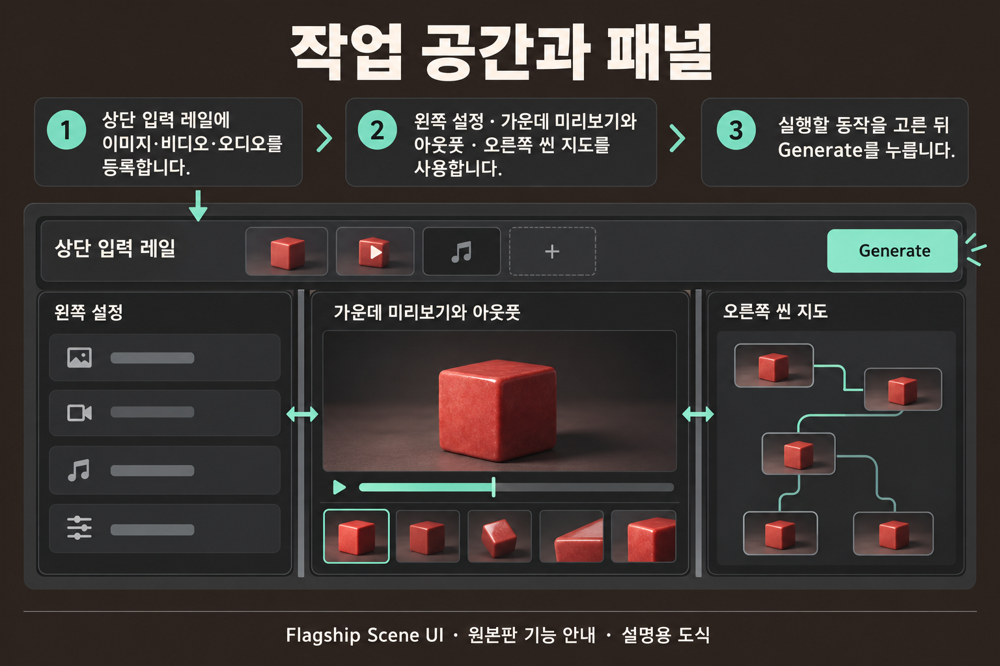
상단 입력 레일과 왼쪽 설정, 가운데 미리보기·갤러리, 오른쪽 씬·클립 지도는 서로 다른 역할입니다. 사이드 구분선으로 패널 너비를 조절하고 기본 배치로 돌아옵니다. 씬 지도는 실행 노드가 아닌 상태·결과 탐색용 그래픽입니다.
02. 새 프로젝트와 저장 작업 선택
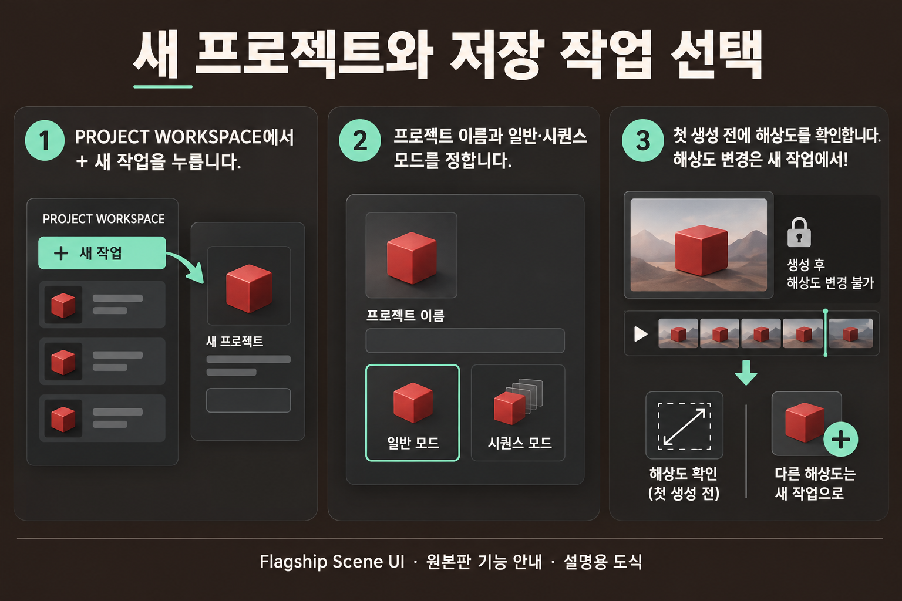
저장 작업 목록은 기존 프로젝트와 생성 이력을 다시 여는 곳입니다. 새로운 해상도나 별도 계획은 + 새 작업으로 분리합니다. 기존 클립을 고치려면 원래 프로젝트를 선택해야 컨텍스트·이력·파일이 연결됩니다. 프로젝트 이름은 생성 시작 후 보호됩니다.
03. LLM으로 계획 JSON 만들고 불러오기
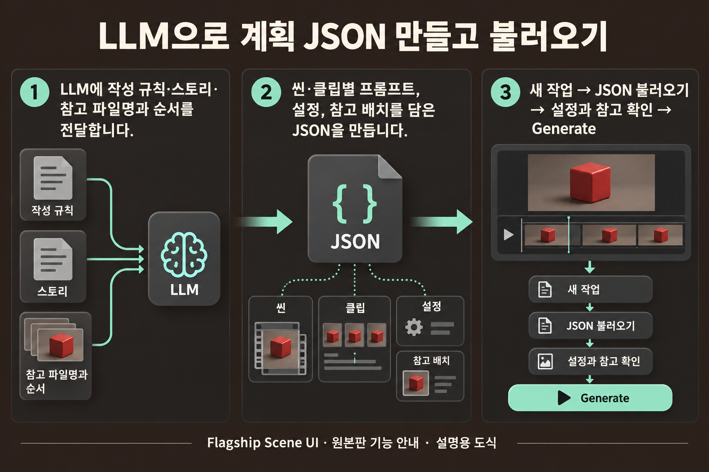
작성 채팅에 프롬프트 규칙, 현재 설정을 내보낸 JSON, 스토리, 실제 참고 파일명과 등록 순서를 함께 줍니다. scenes·clips·settings·references가 있는 계획을 받아 새 작업에서 JSON 불러오기로 검증한 뒤 내용을 확인합니다. JSON은 노드 워크플로우와 다른 형식이며 미디어·모델을 내장하지 않습니다. 생성된 클립이 있는 프로젝트에는 전체 계획을 덮어 불러올 수 없습니다. 불러오기가 프로젝트를 자동 전환하지도 않습니다.
04. 일반 모드와 시퀀스 모드
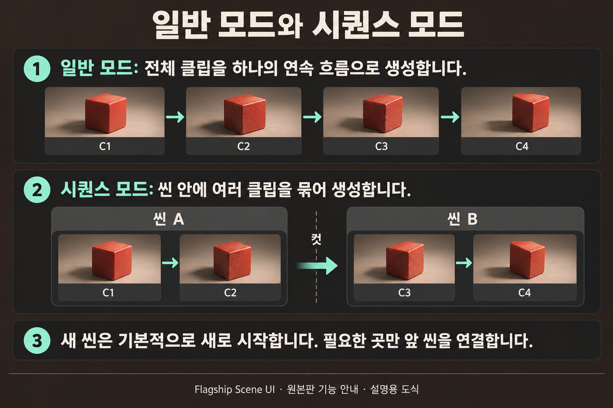
일반 모드는 전체 클립을 하나의 연결 흐름으로 다룹니다. 시퀀스 모드는 씬 안에서 연결하고 씬 경계에서는 기본적으로 새로 시작합니다. 같은 장소·동작의 연속은 한 씬에, 공간·시간·연출이 크게 바뀌는 곳은 새 씬에 둡니다. 프로젝트 워크스페이스의 모드 토글을 사용합니다. 합치기 경로는 18번 안내를 확인합니다.
05. 씬 추가·분리·연속 설정
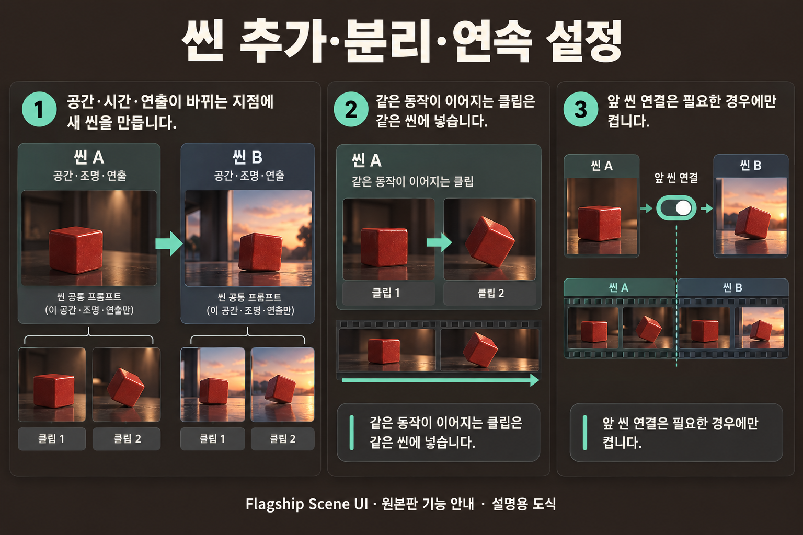
+ 씬 추가로 장면을 만들고 여기서 씬 분리로 현재 클립부터 새 씬으로 나눕니다. 씬 공통 프롬프트에는 그 공간·조명·연출만 적습니다. 씬 첫 클립의 continue_previous는 앞 씬을 이어받을지 정하고, 씬 내부 클립은 연결됩니다. 전체 첫 클립은 앞 컨텍스트가 없습니다. JSON에서 같은 씬의 클립은 붙어서 배치합니다.
06. 클립 계획·다중 선택·일괄 입력
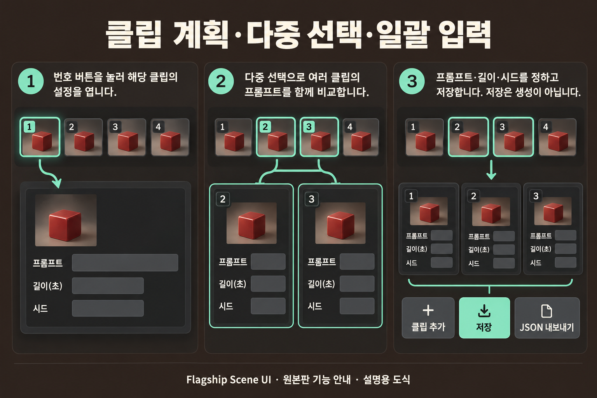
번호 버튼으로 해당 클립 설정을 엽니다. 다중 선택·전체 선택으로 여러 에디터를 나란히 확인하고 프롬프트·길이·시드를 수정합니다. 일괄 입력은 여러 클립의 문장을 넣는 편의 기능이고 JSON 전체 계획과 다릅니다. 미생성 클립 삭제, 클립 추가, 저장, JSON 내보내기를 상황에 맞게 씁니다. 저장만으로 생성이 시작되지는 않습니다.
07. 공통 이미지 참고와 @picture 규칙
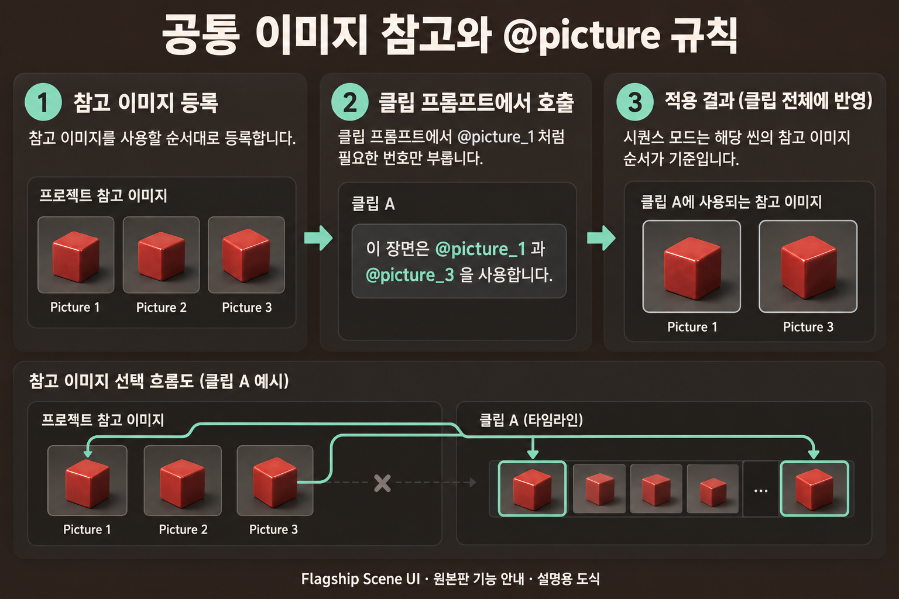
공통 참고 사용 시 일반 모드는 프로젝트 참고, 시퀀스 모드는 해당 씬 참고 목록의 순서가 @picture_N 기준입니다. 프롬프트에서 필요한 번호만 부릅니다. 공통·씬 공통 프롬프트에 모든 인물을 넣으면 모든 클립에 불필요한 이미지가 활성화될 수 있습니다. 선택은 클립 전체 기준이며 발화자나 샷마다 LoRA를 따로 분리하는 기능이 아닙니다. 공통 참고 OFF이면 클립 전용 목록과 <Picture N>을 사용합니다.
08. 참고 비디오·오디오와 입력 관리
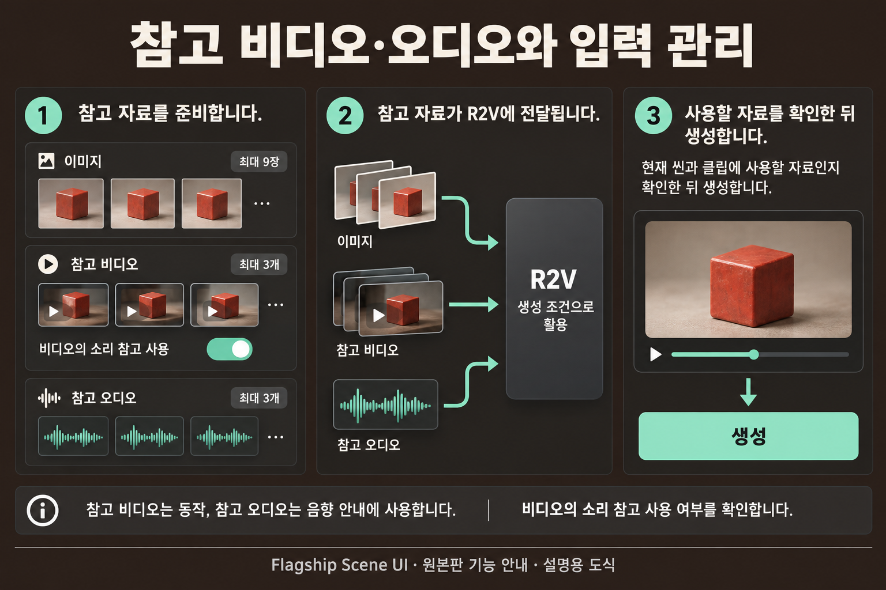
이미지 최대 9장, 참고 비디오·오디오는 각각 최대 3개입니다. 비디오의 소리 참고 스위치를 확인합니다. 참고 오디오는 목소리·음향 안내이며 프로젝트 립싱크 오디오와 용도가 다릅니다. 공통 비디오·오디오는 이미지의 @picture 태그처럼 자동 필터링되지 않습니다. 파일 선택·검색으로 기존 입력을 찾고, 순서 변경·제거 후 번호를 다시 확인합니다. 파일 자체가 실행 환경에 있어야 합니다.
09. I2V 시작·끝 이미지와 생성 방식
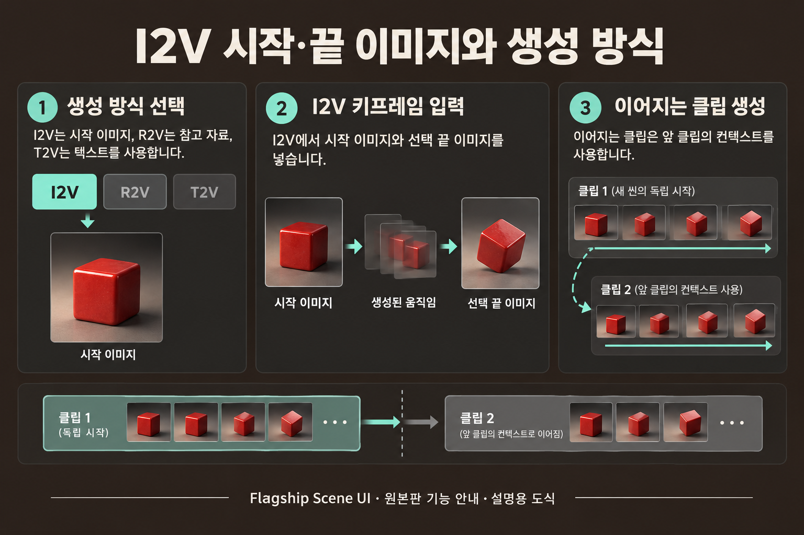
클립 생성 방식을 I2V·R2V·T2V에서 고릅니다. 키프레임 입력은 I2V에서 표시되며 시작 이미지와 선택 끝 이미지를 설정합니다. 이어지는 클립은 앞 AV 컨텍스트를 사용하므로 시작 이미지를 매 클립 강제 재적용하는 방식으로 이해하지 않습니다. 새 씬의 독립 시작과 이어지는 클립을 구분해서 계획합니다.
10. 립싱크 오디오·대사·음성 생성
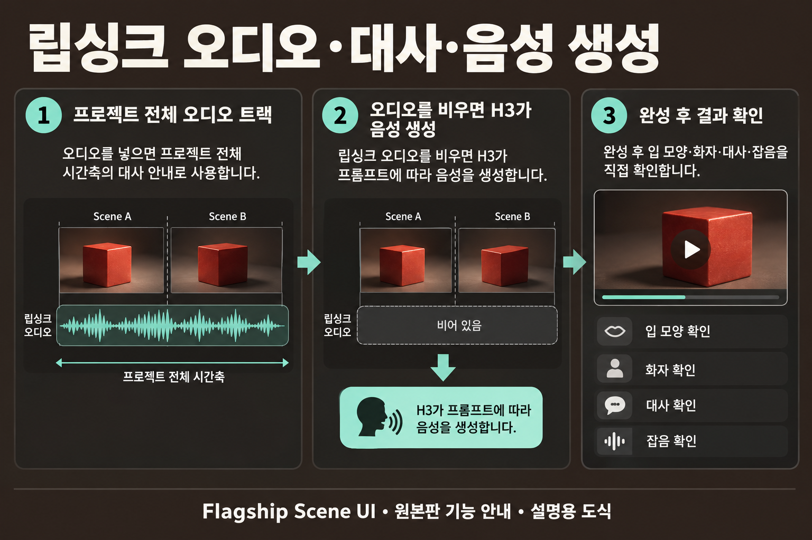
프로젝트 공통 립싱크 오디오는 전체 시간축의 트랙입니다. 비워 두면 프롬프트에 따라 H3가 음성을 생성합니다. 참고 오디오나 음성 LoRA와 동일한 입력이 아닙니다. 한 클립에 대사·화자가 과도하면 발음·화자 혼합·잡음이 생길 수 있으므로 실제 결과를 듣고 확인합니다. 캐릭터별 음성 LoRA 자동 분리 UI는 구현된 기능으로 안내하지 않습니다.
11. 종횡비·메가픽셀·해상도 잠금
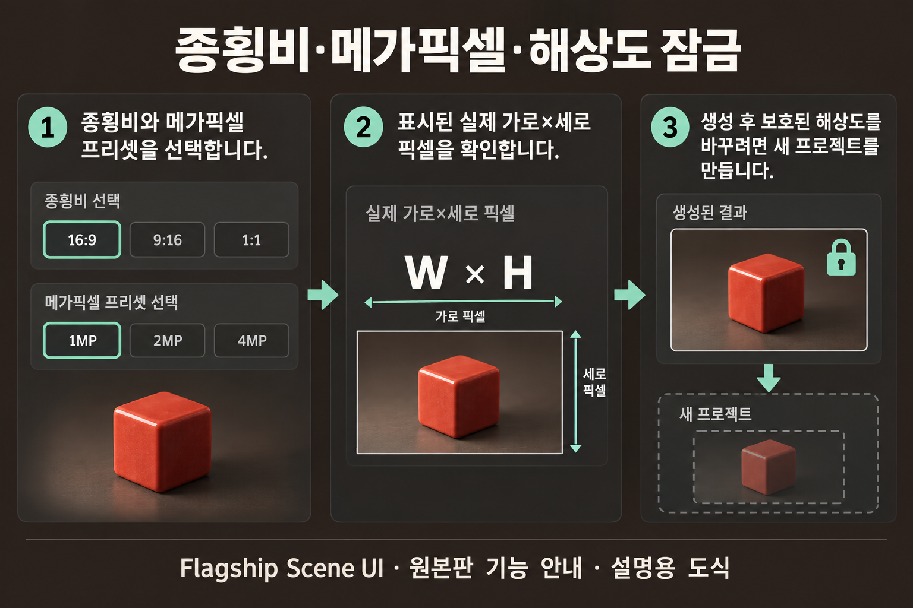
클립 계획 아래 해상도 영역에서 종횡비·메가픽셀을 선택하고 실제 가로×세로 표시값을 확인합니다. MP 숫자만으로 특정 짧은 변 픽셀을 단정하지 않습니다. 이미 만들어진 프로젝트의 해상도는 컨텍스트·병합 호환성 때문에 보호됩니다. 다른 해상도는 새 프로젝트로 시작합니다. 업스케일 배율은 이 원본 생성 해상도와 별개입니다.
12. 모델·Turbo·참고·추가 LoRA
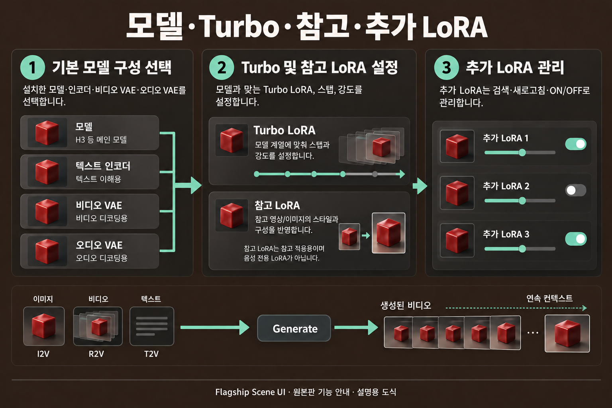
공통 설정에서 H3 모델·인코더·비디오 VAE·오디오 VAE를 실제 파일명으로 선택합니다. Turbo LoRA의 모델 계열과 스텝 설정을 맞춥니다. 참고 LoRA는 참고 적응용이며 음성 전용 LoRA가 아닙니다. 추가 LoRA는 목록에서 검색하고 강도·ON/OFF를 설정합니다. 파일을 새로 넣었으면 모델·LoRA 새로고침을 사용합니다. 특정 인물에게만 적용되는 자동 화자 마스크가 아닙니다.
13. Attention·캐시·메모리 분할
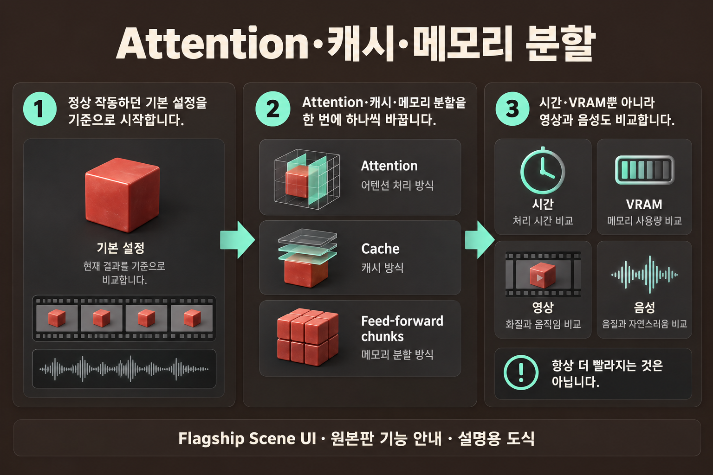
설치된 커널에 맞는 Attention, fp16 누산, 캐시, feed-forward 분할을 선택합니다. match/max 참고 크기는 입력 처리 비용과 보존 정보가 달라 속도·메모리에 영향을 줍니다. 메모리 분할은 프레임 보간이나 자동 화질 복원이 아닙니다. Sage·Spectrum 등은 환경·분기에 따라 지원 여부가 다르므로 한 번에 하나씩 바꾸고 기존 결과와 비교합니다. OOM이 없다는 이유만으로 품질까지 동일하다고 판단하지 않습니다.
14. 클립·전체·합치기·다음 예약
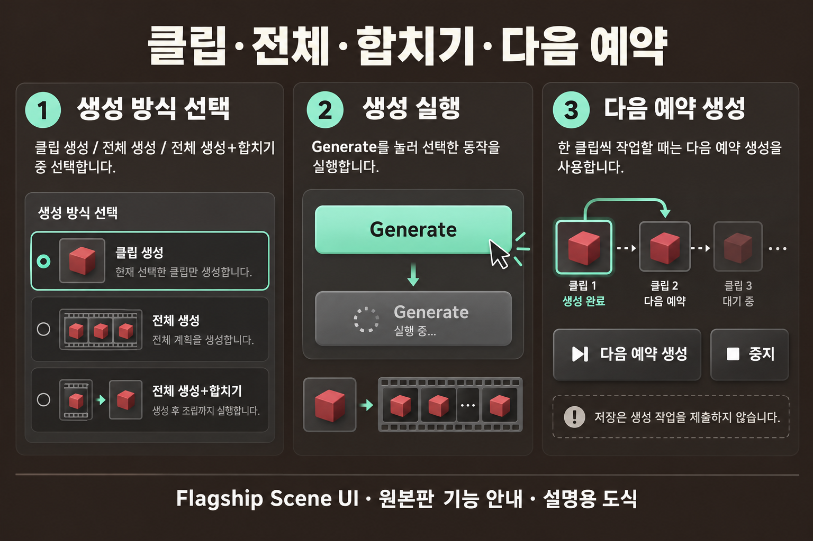
클립 생성은 현재 선택 한 클립, 전체 생성은 전체 계획, 전체 생성+합치기는 생성 후 조립까지 실행하는 모드입니다. 별도의 Generate가 선택 동작을 시작합니다. 다음 예약 생성은 순차 작업을 돕고 새 Run ID를 매번 만드는 기능이 아닙니다. 실행 상태·오류를 확인한 뒤 중지를 사용합니다. 업스케일은 별도 설정이 켜진 경우에만 해당 경로로 실행됩니다.
15. 선택 클립 재생성과 이전 결과
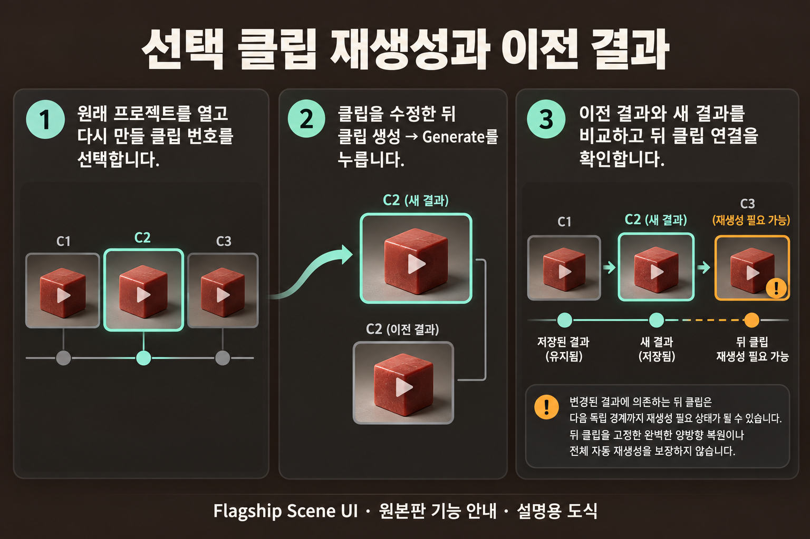
기존 프로젝트에서 다시 만들 번호를 고른 뒤 클립 생성으로 Generate합니다. 이전 결과는 이력으로 남고 나머지 저장 파일을 자동 삭제하지 않습니다. 변경된 결과에 의존하는 뒤 클립은 다음 독립 경계까지 재생성 필요 상태가 될 수 있습니다. 뒤 클립을 고정한 완벽한 양방향 복원이나 전체 자동 재생성을 보장하지 않습니다. 새 프로젝트로 바꾸면 원래 컨텍스트를 찾을 수 없습니다.
16. 씬·클립 지도와 호버 미리보기
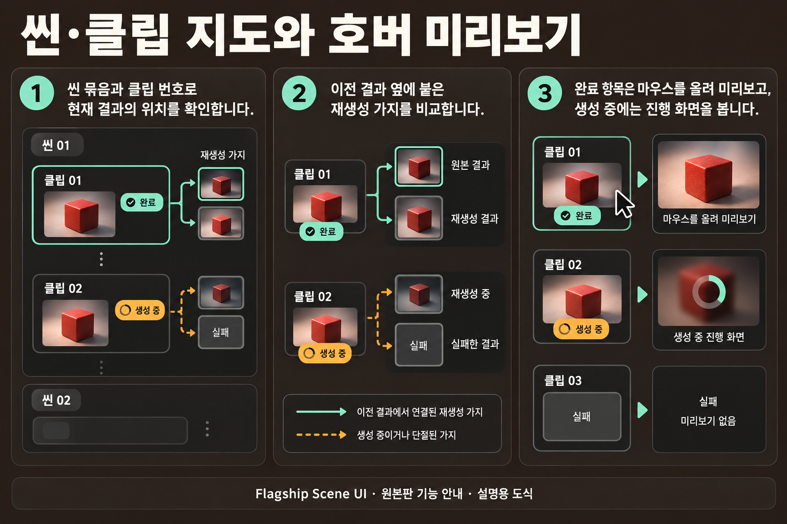
씬·클립 번호와 재생성 가지로 지금 어떤 결과를 보는지 확인합니다. 초록 연결과 주황 단절·갱신 표시를 상태 텍스트와 함께 읽습니다. 완료 항목의 호버 미리보기와 생성 중 라이브 미리보기, 실패 텍스트는 서로 다릅니다. 지도 카드는 실제 노드를 추가하는 기능이 아닙니다.
17. 갤러리 필터·즐겨찾기·삭제·저장소
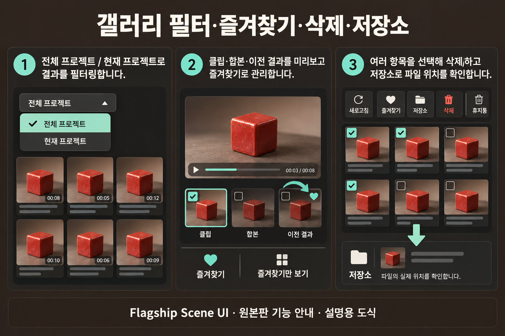
아웃풋은 전체 프로젝트 또는 현재 프로젝트로 필터링합니다. 생성 결과·합본·이전 버전을 눌러 미리보고 즐겨찾기만 볼 수 있습니다. 여러 항목을 선택해 삭제·휴지통 관리를 하고 저장소로 실제 파일 위치를 찾습니다. 새로고침은 목록 갱신입니다. 갤러리에서 업스케일은 지원되는 전체 합본 한 개를 선택해야 하며 모든 클립을 일괄 처리하는 버튼으로 이해하지 않습니다.
18. 씬 안 Endless·씬 사이 FFmpeg
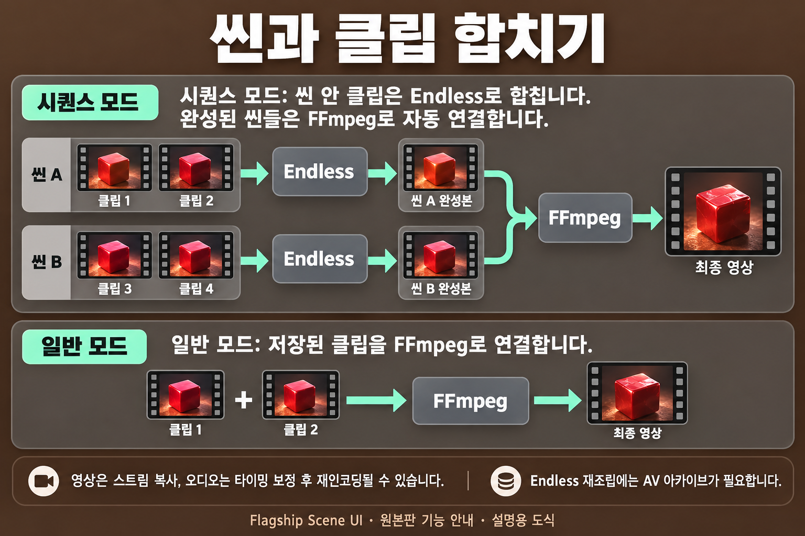
원본 시퀀스 모드는 씬별 AV 컨텍스트를 Endless 스티처로 조립한 다음 완성 씬을 FFmpeg로 자동 연결합니다. 최종 씬 사이 영상은 스트림 복사이고 오디오는 길이 보정 후 AAC 재인코딩될 수 있습니다. 원본 일반 모드의 최종 합치기는 FFmpeg 클립 연결입니다. Endless 재조립에는 MP4뿐 아니라 AV 아카이브가 필요합니다.
19. 선택 합본 업스케일·색상·저장 품질
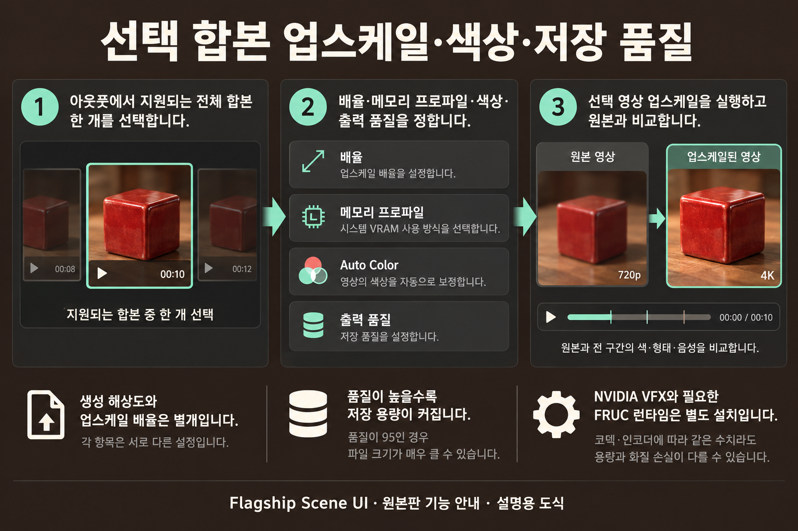
선택 영상 업스케일은 지원되는 합본 한 개를 고른 뒤 별도로 실행합니다. 배율·메모리 프로파일·Auto Color·출력 품질을 확인합니다. 생성 해상도와 업스케일 배율은 별개이고, 품질 95는 저장 용량이 매우 클 수 있습니다. 수치가 같아도 코덱·인코더별 용량·손실이 같지 않습니다. NVIDIA VFX와 필요한 FRUC 런타임은 별도 설치입니다. 원본 파일과 전 구간의 색·형태·음성을 비교합니다.
20. 모션 리페어·가변 프레임 보간
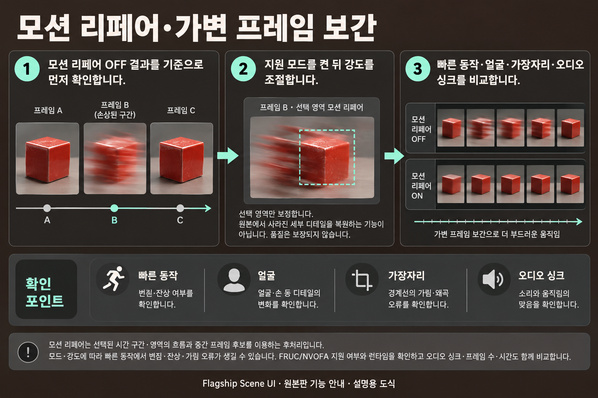
모션 리페어는 선택된 시간 구간·영역의 흐름과 중간 프레임 후보를 이용하는 후처리입니다. 원본에서 사라진 얼굴·손 디테일을 확실하게 재생성하는 기능은 아닙니다. 모드·강도에 따라 빠른 동작에서 번짐·잔상·가림 오류가 생길 수 있습니다. 시작 워크플로우는 OFF입니다. FRUC/NVOFA 지원 여부와 런타임을 확인하고 오디오 싱크·프레임 수·시간도 함께 비교합니다.
21. 재생성 전용 배경 참고 갱신
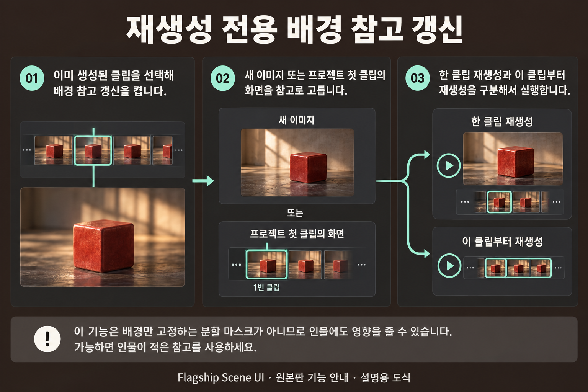
생성된 클립을 다시 만들 때만 쓰는 옵션입니다. 새 배경 이미지 또는 프로젝트 전체 1번 클립의 시점 프레임을 고릅니다. 가능하면 인물이 적은 참고를 씁니다. 이 기능은 배경만 고정하는 분할 마스크가 아니므로 인물에도 영향을 줄 수 있습니다. 한 클립만 다시 만들 때는 클립 생성+Generate, 이 클립부터 재생성은 선택 번호 이후 전체 재생성을 예약합니다. 이후 완료 클립에도 적용은 설정 복사입니다.
22. 클립별 리파이너 ON/OFF·강도·참조
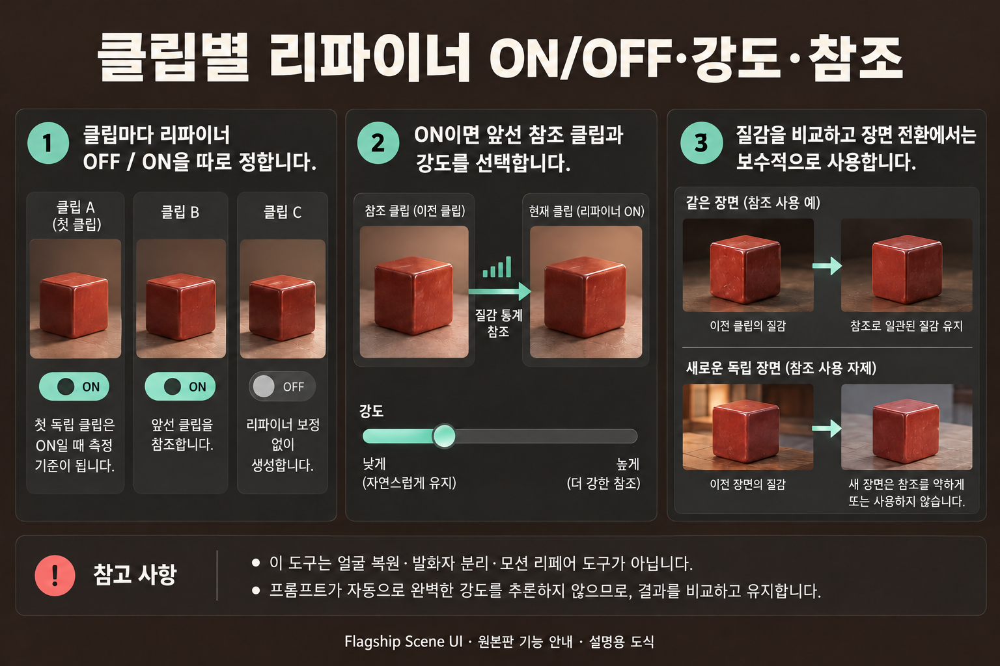
리파이너는 클립별로 OFF/ON을 정합니다. 켜면 강도와 앞선 참조 클립을 고릅니다. 같은 씬의 통계와 비교하고 새 독립 씬은 이전 공간의 질감을 강하게 가져오지 않게 합니다. 첫 독립 클립은 측정 기준이 됩니다. 이 도구는 얼굴 복원·발화자 분리·모션 리페어가 아닙니다. 프롬프트가 자동으로 완벽한 강도를 추론하지 않으므로 비교 후 유지합니다.
23. 카메라 창·샷·이동·렌즈·호버
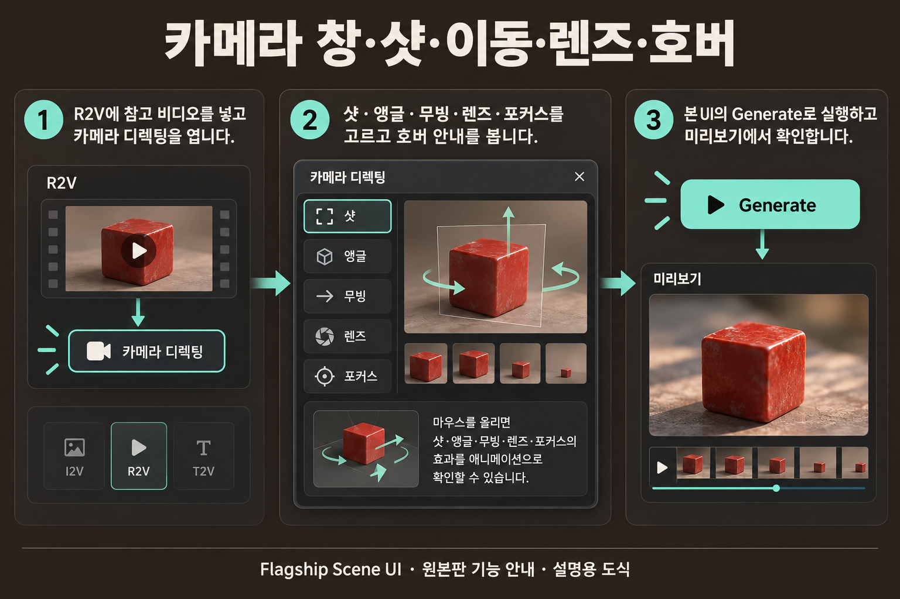
R2V 참고 비디오를 넣으면 카메라 디렉팅을 사용할 수 있습니다. 버튼은 편집 창을 열고 각 기능 선택은 창 안에서 합니다. 샷·앵글·무빙·렌즈·포커스 등을 호버 애니메이션으로 확인합니다. 모델·샘플링·해상도·결과 미리보기·Generate는 본 UI와 연결됩니다. 모드별로 크롭·생성·깊이 안내·선택 어댑터 경로가 다르며 큰 회전 성공을 보장하지 않습니다.
24. 세그먼트·각도·줌·속도·립싱크
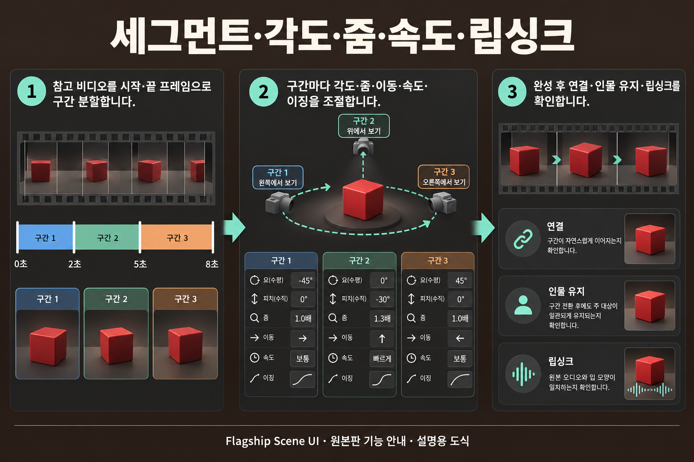
참고 비디오의 시작·끝 프레임을 기준으로 구간을 나누고 초 단위 표시와 대조합니다. 수치 앵글·줌·이동·속도·이징을 조절해 구간별 경로를 지정합니다. 필요한 모델·어댑터는 모드마다 다르므로 링크 안내를 확인합니다. 호버 더미는 컨트롤 설명용이며 실제 품질 증거가 아닙니다. 가림·인물 회전·입 모양이 바뀌면 원본 오디오와 함께 확인합니다.
25. 공통 설정·폰트·VRAM 리셋
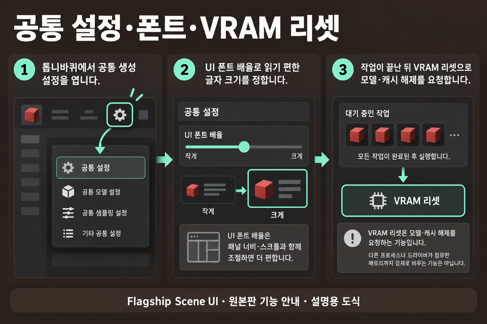
톱니바퀴에서 공통 모델·샘플링 등 설정을 엽니다. UI 폰트 배율로 표시 크기를 바꾸고 패널 너비·스크롤과 함께 조절합니다. VRAM 리셋은 작업이 끝난 뒤 모델·캐시 해제를 요청하는 기능입니다. 다른 프로세스나 드라이버가 점유한 메모리까지 강제로 비우는 기능은 아닙니다. 생성 도중 임의로 서버 재시작할 필요는 없습니다.
26. 노드 보기와 스튜디오 복귀
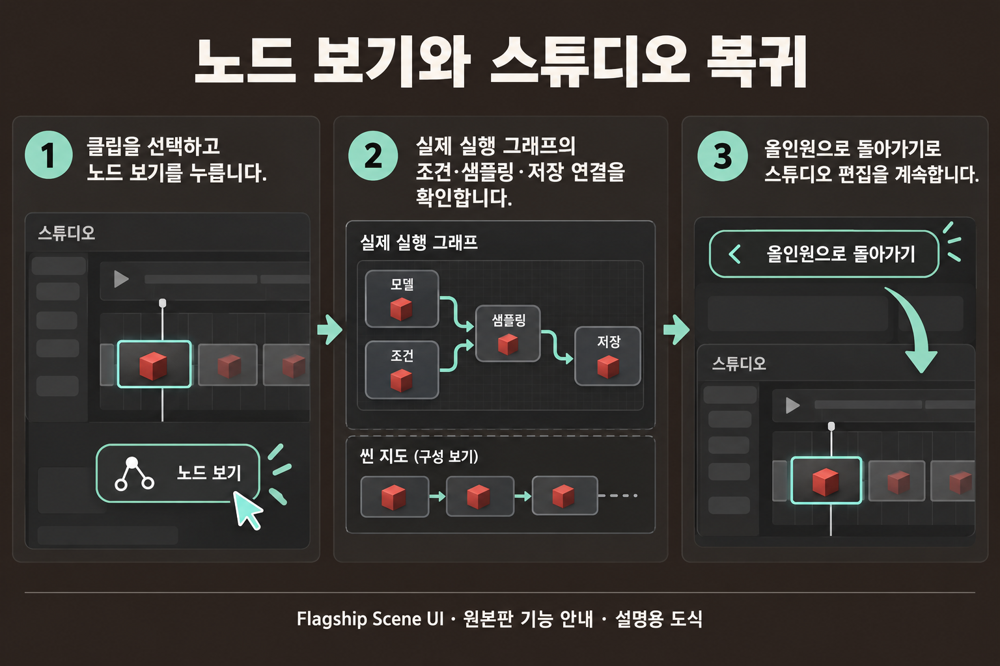
노드 보기는 현재 선택 클립의 실제 실행 구조를 확인할 때 씁니다. 오른쪽 씬 지도와 달리 모델·조건·샘플링·저장 연결을 볼 수 있습니다. 올인원으로 돌아가기로 편집 UI에 복귀합니다. 임의로 끊은 그래프와 저장된 계획이 자동으로 양방향 동기화된다고 가정하지 말고, 공개 예제는 스튜디오 계획을 기준으로 사용합니다.
27. 원본판 설치·의존성·모델·출처
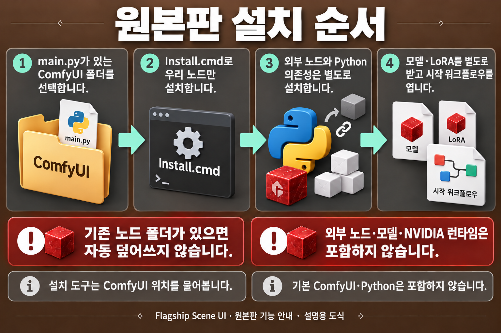
Install.cmd는 main.py가 있는 ComfyUI를 물어보고 우리 노드만 설치합니다. 외부 커스텀노드는 EXTERNAL_NODES.md의 출처 또는 별도 설치 도구로 사용자가 설치합니다. 이미 있는 노드는 자동 덮어쓰지 않습니다. Python 의존성·모델·LoRA·NVIDIA 런타임도 별도입니다. Git 소스판에는 보호 이미지 업스케일러 바이너리가 없고 Full ZIP에만 우리 기존 바이너리가 있습니다.